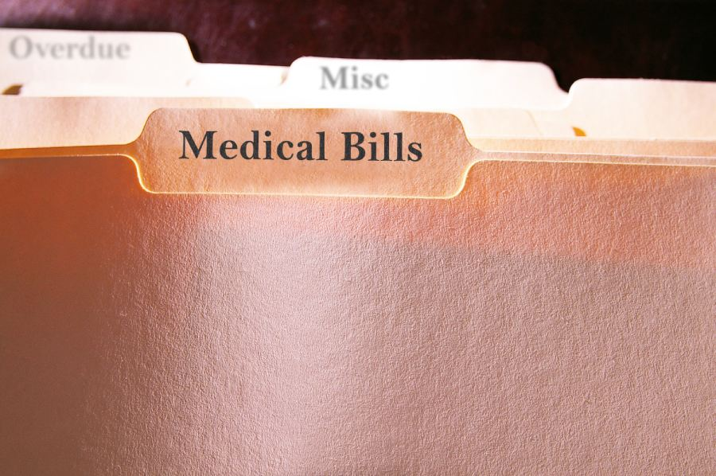

We understand that dealing with medical bill payments can feel overwhelming. Especially when those high medical bills seem to come out of nowhere, right? You may feel like your bank account is in a never-ending tug-of-war.
Don’t worry. We’re here to help you navigate this tricky terrain, so you don’t have to face any nasty surprises. Let’s break down the complexities of medical debt into simple, bite-sized pieces together.
And guess what? It all starts with understanding your medical bill.
Understanding Medical Debt
Medical debt isn’t just a scary phrase. It’s a reality for many of us, especially when we get hit with overpaid medical bills or a balance bill. But what’s a balance bill, you may ask? It’s when you get charged the difference between what your health insurance pays for your health care and what your in-network health care provider charges.
Sounds unfair, right? Unfortunately, it’s a common practice.
Let’s add another layer here: credit card debt. It’s tempting to just swipe your credit card to clear those hefty medical expenses. But beware! Your credit card bill can quickly snowball due to high interest rates charged by your credit card issuer.
Not to mention, it can hurt your credit score. But fear not! We have some good news for you. Many states have laws to protect you from overpaying for out-of-network care, thanks to the No Surprises Act. The act protects you from receiving unexpected bills after emergency care. Let’s dive into this a bit more in the next section.
Step One: Understanding Your Medical Bill
Alright, let’s tackle that confusing piece of paper – your medical bill. Sometimes, it can feel like it’s written in a different language, with weird codes and numbers.
These are known as CPT codes, and they’re super important. Each code is linked to a specific medical service you received. It could be anything – a quick visit to your doctor, an X-ray, or even a major surgery.
What you need is an itemized bill with CPT codes. It’s like a detailed shopping list, showing exactly what you’re being charged for. This way, you can see if your bill matches up with the services you remember receiving. Let’s be real, no one wants to be a victim of patient overpayment.
The trick is to ask your healthcare provider for this itemized bill with the CPT codes. You might feel a bit awkward asking, but remember, it’s your right to know, per HIPPA laws. Understanding your medical bill is your first step in taking control of your medical debt and keeping your bank account happy.
Stay tuned for the next step where we’ll show you how to use these CPT codes to avoid overpaying and how you can negotiate a payment plan that won’t break the bank.
Remember, we’re in this together. No high medical bills or credit card balance is too big to tackle. We can get through this together!
Step Two: Navigating CPT Codes and Medicare Pricing
Now that you’ve got your itemized bill in hand, you might be looking at those CPT codes and thinking, “What next?” That’s where we come in. Time to put on your detective hat and do a little digging. This is your chance to make sure you’re not part of the overpaid medical bills statistic.
Cracking CPT codes can be done through an internet search or using an AI chatbot.
But, why stop there? Knowing what you’re being charged for is only half the battle. The other half is knowing what a fair price is. And that’s where Medicare comes in.
Medicare is the health plan for folks 65 and older, but it’s not just for them. It can also be your reference point for understanding how much you should be paying for your medical expenses. Medicare sets out the maximum amount they will pay for each CPT code.
You might ask, “Why should I care about Medicare pricing?” Well, it’s because it’s often much lower than what most people without Medicare are asked to pay. For example, Medicare might pay 10% of the original amount charged to a patient. So, having Medicare prices at your fingertips gives you a base point for understanding whether your own health insurance is offering you a fair deal.
CPT codes and Medicare pricing can found on the following websites:
- American Medical Association
- Centers for Medicare and Medicaid Services
- Medicare.gov Procedure Price Lookup
Financial Assistance
But what if you’re facing high medical bills and your bank account just can’t handle the pressure? Don’t worry, there’s a solution for that too: financial assistance. Many healthcare providers have programs to help patients struggling to pay their medical debt. They might offer an income-based sliding scale discount, meaning the less income you have, the less you have to pay. For example, nonprofit hospitals and medical centers are required by federal law to offer some sort of charity care to their communities.
In short, taking charge of your medical bill payments isn’t as daunting as it may seem. By understanding your medical bill, using CPT codes to compare Medicare prices, and exploring options like payment plans and financial assistance, you can take control of your medical debt. Remember, there’s always help available to make sure you’re not paying more than you need to for your health care.
Stay with us for the final step where we’ll guide you on how to negotiate a payment plan that suits your financial situation, so you can say goodbye to overpaid medical bills for good! You’ve got this!

Step Three: Arranging a Payment Plan that Works for You
Great job making it to the final step! You’re doing awesome and you’re almost at the finish line. This part is all about talking to your healthcare provider and arranging a fair payment plan for your medical debt.
First, remember you’ve done your homework and you’re armed with important information. You have your itemized bill with the CPT codes, and you’ve researched what Medicare pays for these services. With this knowledge, you can avoid becoming one of those people with overpaid medical bills.
Negotiating with Your Provider
Now, it’s time to pick up the phone and call your healthcare provider. Be ready to talk about the CPT codes and the Medicare prices you’ve found. Explain that you want to pay the same amount that Medicare would pay. This might be a lot less than what you were initially charged.
But remember, healthcare is not a one-size-fits-all kind of deal. If your medical expenses are high and it’s putting a strain on your bank account, don’t be shy to mention this to your provider. They need to know about your financial situation so you can work out a payment plan that fits your budget.
Warning: Don’t Put Medical Debt on Credit Cards
You might think pulling out your credit card to pay the medical bill is the easiest way. However, remember that the credit card bill that follows might come with a high interest rate. This can cause your credit card balance to balloon over time and could lead to credit card debt that’s even harder to pay off.
On the other hand, a direct payment plan with your healthcare provider doesn’t have an interest rate and won’t show up on your credit score like credit card payments can. You don’t want to hurt your credit score just because of a medical bill, right?
When discussing a payment plan, remember to be honest. Talk about how much you can comfortably pay each month without feeling the pinch. It’s important to agree on an amount that won’t leave your bank account empty.
The No Surprises Act
Also, make sure to ask if your state laws have any additional protections for you. The No Surprises Act can be a lifesaver, especially if you had to get emergency care from physicians or providers outside of your health plan’s network. This new law ensures you’re only billed at the in-network rate, protecting you from any unexpected balance bills.
Pay Your Bills On Time, Every Time
Finally, don’t forget to stick to the payment plan once it’s in place. Making the payments as promised keeps your bills from going to collections and maintains a healthy credit score.
You’ve done it! You’ve navigated the world of medical billing, ensured you’re not overpaying, and created a manageable payment plan. The journey to tackle your medical bill payments might have seemed challenging, but look at you now! You’ve taken control of your medical expenses and health care.
Remember, managing medical debt is not a sprint, it’s a marathon. You’re doing great, and you’ve got this! Keep going, and you’ll cross that finish line in no time.
Takeaways
Throughout this journey, we’ve discovered that medical debt can take a toll on your financial health and peace of mind. But with your newfound understanding of the system, you can avoid being a victim of overpaid medical bills or feeling the pinch of a drained bank account due to medical expenses.
Understanding your medical bill and the CPT codes was your first step. This helped to ensure you were not overcharged and gave you a clear picture of your medical expenses. You’ve learned to become your own advocate in the world of medical billing.
Remember, if something seems off, question it. You have a right to understand every charge on your bill.
The next step involved comparing Medicare payments with your charges. This gave you an idea of a fair price and empowered you to negotiate your bill.
In the final step, we talked about negotiating a payment plan that works with your budget. We covered how crucial it is to avoid falling into credit card debt due to high-interest rates that can affect your credit card balance and ultimately, your credit score. You also learned about potential financial assistance and the importance of the No Surprises Act that protects patients from unexpected balance bills.
This journey isn’t just about understanding your bills and reducing medical debt. It’s about taking charge of your health care and ensuring it doesn’t negatively impact your financial health. The skills you’ve learned here can be used with future medical bills, and the knowledge can be shared with others who may be in similar situations.
Managing your health care and medical expenses can be a daunting task, but remember, you’re not alone in this. There’s help available, and laws in place to protect you. Don’t let the fear of debt keep you from seeking the necessary health care.
The Bottom Line
Medical bills might seem scary, but with the right tools and knowledge, you can take control. You can ensure that you’re paying a fair price, manage your medical debt responsibly, and focus on what really matters – your health.
Take a breath and pat yourself on the back. You’ve come a long way! You’re not just a patient now; you’re an empowered healthcare consumer.
Keep going, keep asking questions, and keep taking charge of your health. You’ve got this!
Remember, health is wealth, but knowledge is power. You’ve gained both. So go forth and share what you’ve learned. You never know who you might help.
I hope you found this guide helpful. If you have any questions or need more information, don’t hesitate to reach out. I’m here to help.